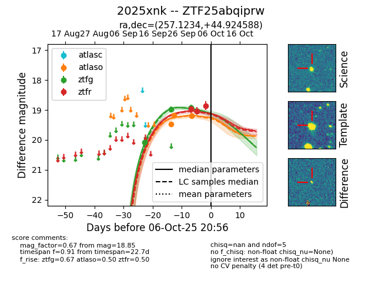
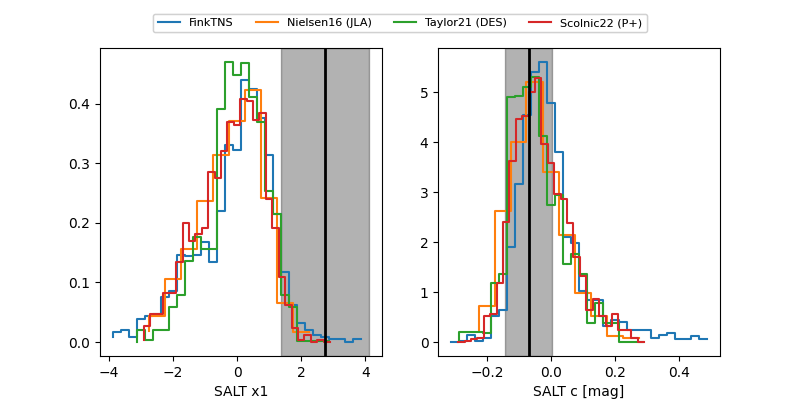

FINK: ZTF25abqiprw
Lasair: ZTF25abqiprw
ALeRCE: ZTF25abqiprw
TNS: 2025xnk
YSE: 2025xnk
ZTF25abqiprw (ztf,fink)
2025xnk (tns,yse)
equatorial (ra, dec) = (257.1234,+44.92459)
galactic (l, b) = (70.3693,+36.55752)


last atlaso=19.19, ztfg=19.03, ztfr=18.85
3 atlaso, 4 ztfg, 3 ztfr detections